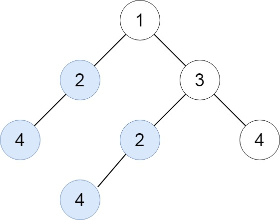
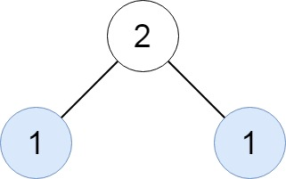
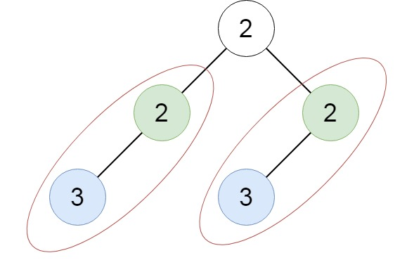

652. 寻找重复的子树
后序把每棵子树序列化成字符串「值(左)(右)」，哈希表数出现次数；某串第二次出现，就把这棵子树的根记入答案。
思路
- 后序遍历：先拿到左、右子树的序列串，再拼出
值(左)(右)；空孩子是空括号，串和子树一一对应。 cnt.merge(key, 1, Integer::sum)返回出现次数，恰好等于 2 时才res.add(node)——第三次及以后不再加，保证同类只返回一个根。- 序列化顺序天然是「先孩子后父亲」，同一棵子树的所有结点共用一个根，直接记根即可。
图解
最优解
1import java.util.*;2 3class Solution {4 private final Map<String, Integer> cnt = new HashMap<>();5 private final List<TreeNode> res = new ArrayList<>();6 7 public List<TreeNode> findDuplicateSubtrees(TreeNode root) {8 ser(root);9 return res;10 }11 12 // 后序序列化：值(左子树)(右子树)，空孩子是空括号；同一串出现两次即重复子树13 private String ser(TreeNode node) {14 if (node == null) return "";15 String key = node.val + "(" + ser(node.left) + ")" + "(" + ser(node.right) + ")";16 // 恰好在第二次出现时记录，保证同类重复子树只返回一个根17 if (cnt.merge(key, 1, Integer::sum) == 2) res.add(node);18 return key;19 }20}题目
给你一棵二叉树的根节点 root ，返回所有 重复的子树 。
对于同一类的重复子树，你只需要返回其中任意 一棵 的根结点即可。
如果两棵树具有 相同的结构 和 相同的结点值 ，则认为二者是 重复 的。
示例 1：

输入：root = [1,2,3,4,null,2,4,null,null,4] 输出：[[2,4],[4]]
示例 2：

输入：root = [2,1,1] 输出：[[1]]
示例 3：

输入：root = [2,2,2,3,null,3,null] 输出：[[2,3],[3]]
提示：
- 树中的结点数在
[1, 5000]范围内。 -200 <= Node.val <= 200
题面取自力扣当前版本。
数据快照 2026-11-04。题面版权归力扣所有，本站点仅供本人学习使用，请勿对外发布。